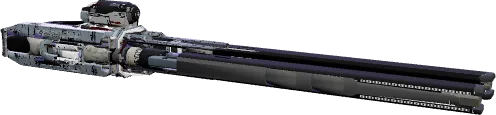
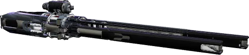
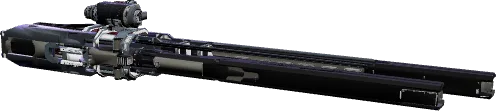

Attrition-Baureihe
Dieselbe Waffe in sechs Größen
Gr. 1

Attrition-1
198,33 DPS · ab 10.241
Gr. 2Attrition-2
320,83 DPS · ab 23.047
Gr. 3 · diese Seite
Gr. 4Attrition-3
501,67 DPS · ab 51.851

Attrition-4
583,33 DPS · ab 116.665
Gr. 5
Attrition-5
875 DPS · ab 262.495
Gr. 6noch kein Modell
Attrition-6
2.947,88 DPS · ab 590.615
Datenblatt
Alle 15 Spielwerte (die Seite zeigt heute 5)
Feuerkraft
- Schaden je Schuss
- 86 Energie
- Feuerrate
- 350 /min
- DPS
- 501,67
Flugbahn
- Projektil
- 1.480 m/s
- Flugzeit
- 1,3 s
- Reichweite
- 1.924 m
- Streuung
- 0,5
Munition und Wärme
- Munition
- 75
- Regeneration
- 15 /s nach 0,73 s
- Wärme je Schuss
- 1.800
Bauteil
- Strombedarf
- 0,75
- EM-Signatur
- 278
- Bauteil-HP
- 1.024
- Volumen
- 0,756 SCU
Anstatt die Leistung der Waffe automatisch zugunsten ihrer Stabilität einzuschränken, liegt dank der Kaskadentechnologie von Hurston Dynamics die Wahl ganz bei dir.
Ähnliche Waffen
Größe 3, Energie, gleiche Reichweite